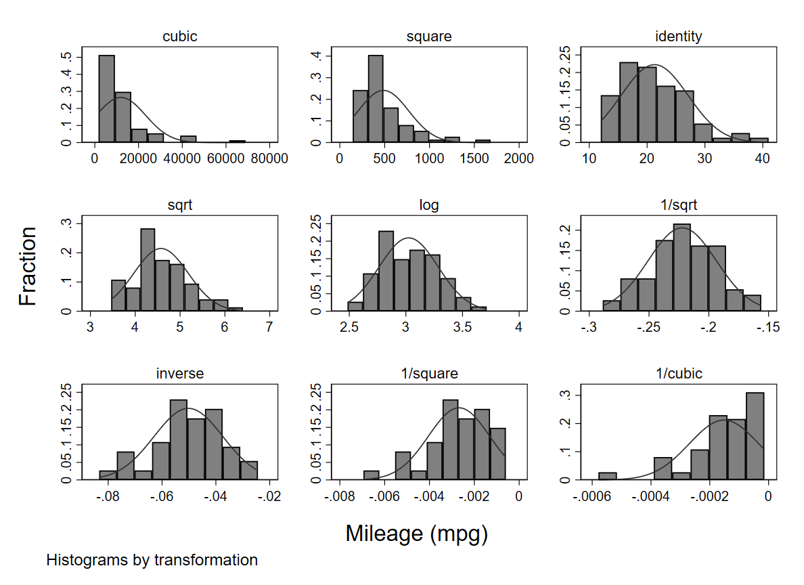
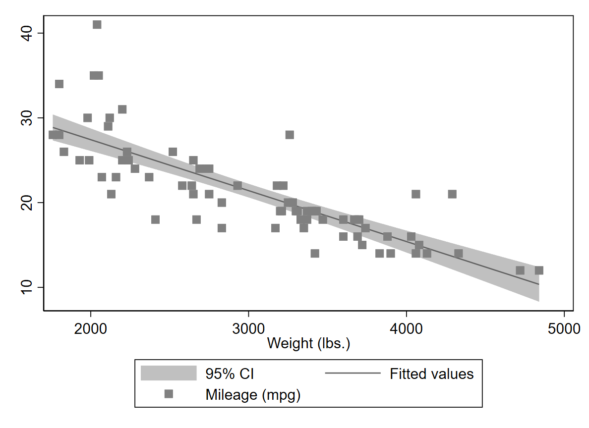

Chapter 7 Visualisierungen
Histogramm
*Histogram inkl. Normalverteilung
sysuse auto, clear
hist mpg, normGladder
- Gladder transfomiert eine numerische Variable und zeigt dir wie die Verteilung nach der Transformation aussieht
gladder mpg, fraction
Box-Plot
*Box-Plot
graph box mpg*Horizontal und für mehrere Gruppen
graph hbox mpg, over (foreign)Bar graph
graph bar price, over(foreign)CI Bar
- cibar (confidence interval bar) ist ein Ado und muss installiert werden
cibar price, over(foreign)Scatter plot
scatter mpg weight- mit Vorhersage eines linearen Zusammenhangs
twoway scatter mpg weight || lfit mpg weight
- mit CIs (confidence intervals)
twoway lfitci mpg weight || scatter mpg weight
- mit Vorhersage eines quadratischen Terms
twoway qfitci mpg weightMany more options
Diese Seite zeigt nur einige wichtigste Graphen, um u.a. Verteilungen zu visualisieren, noch mehr Infos zum erstellen von Graphen findet ihr auch im:
Leider nicht für Stata verfügbar: 😉
graph paranormal